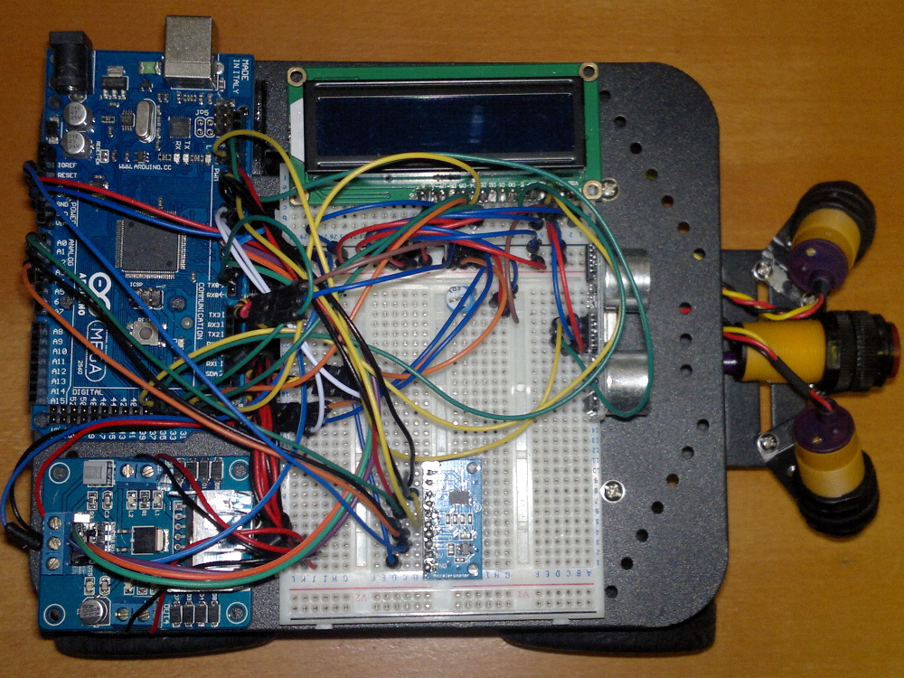

Robot Project: Components | Chassis Assembly | Electronics | Wiring | Code
Adding the Electronic Components to the Chassis
I used adhesive-backed velcro to attach the breadboard, Arduino and motor shield to the chassis top plate. It seems to work well enough to both attach the components and to insulate them from the chassis.
After soldering the header to the LCD screen (there is a good tutorial on LCD screens here), plug it into the breadboard. The Maplins breadboard I used has a separate side section that is ideal for this. A potentiometer is also required to act as a brightness control for the screen and this also needs to be found a convenient spot on the breadboard.
I used the brackets supplied with the chassis to mount the IR sensors to the plate on the front of the chassis. One is aimed directly forward and the other two are pointed down and to the side largely with the idea of checking for steps. These positions will probably need some tuning over time.
As a temporary measure, the ultrasonic sensor can be plugged directly into the breadboard, pointing forwards. In this position it is a bit unstable and prone to some odd readings so I intend to make a more solid mount for it eventually. The accelerometer also needs to be soldered to its header before it can be used and just needs to be mounted at a suitable empty space on the breadboard.
When connecting components to the breadboard be VERY CAREFUL to make sure you do not accidentally connect different components on the same breadboard tracks otherwise short-circuits and almost certain disappointment will result. This instructable covers breadboard basics if you are just getting started with electronics.

Return to home page.